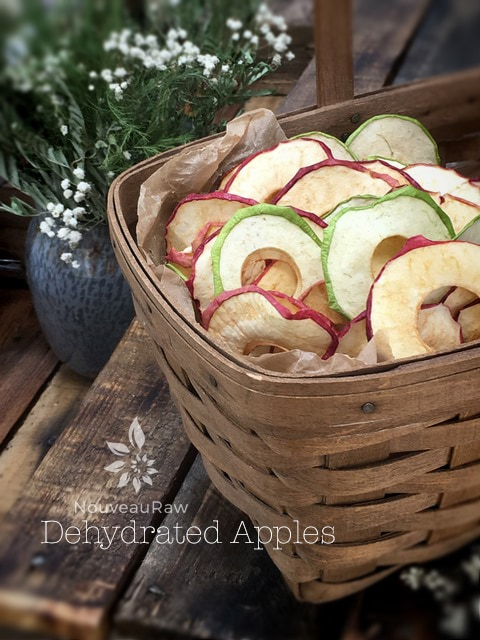
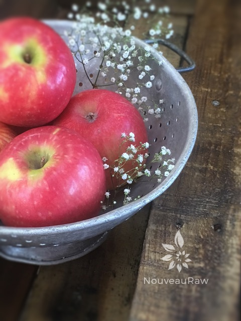
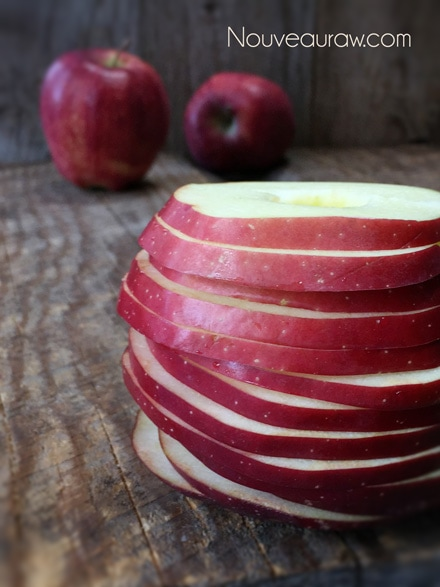
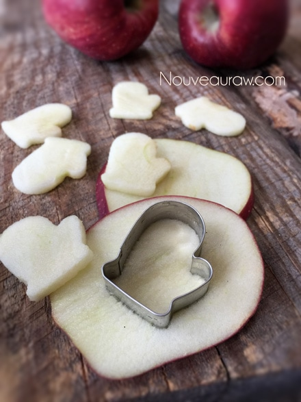
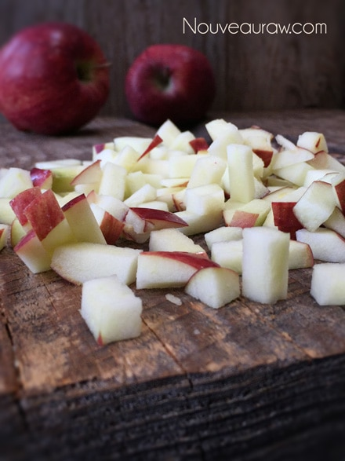
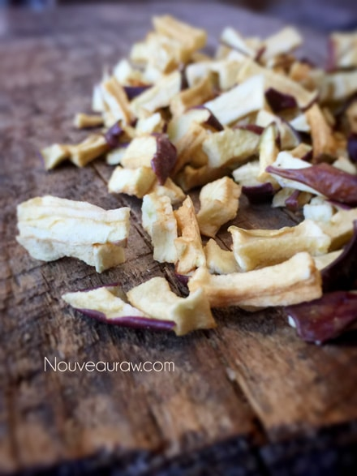
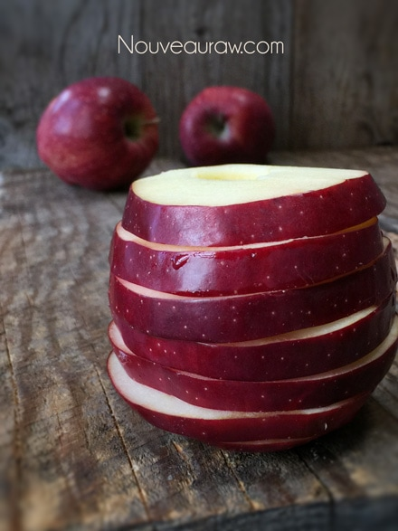
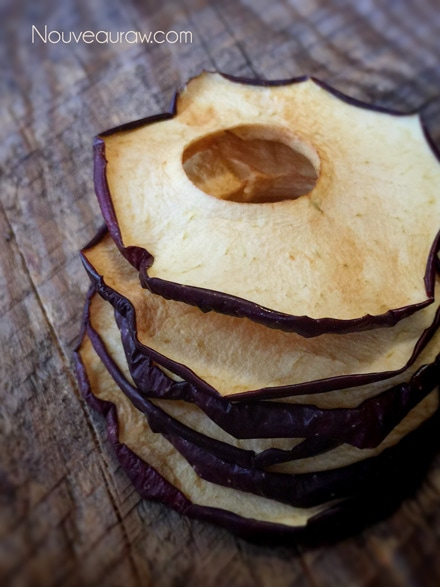
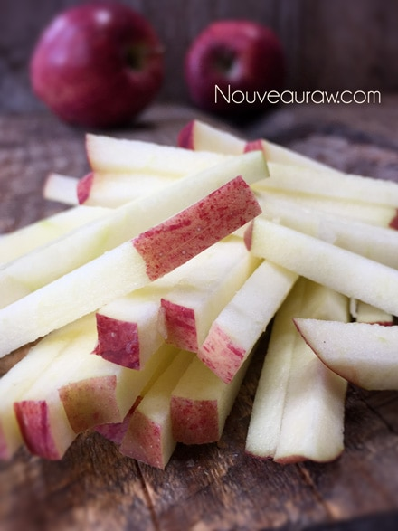
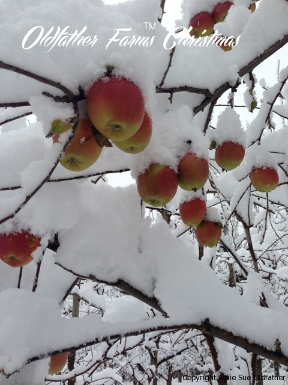

Dehydrated Apples

~ raw, dehydrated ~
This year my husband and I received an amazing gift from Mother Nature. Christmas morning we woke up to the most enchanting snowfall ever. It was a true Norman Rockwell scene if I had ever seen one. The sky was white, the land was white, the trees were white, the deck was white… everything was blanked in snow. And it was still coming down in large, fat, lazy flakes.
We had our morning snuggle, sipping our coffees as we enjoyed the beauty of the Christmas tree and the sounds of soft Christmas music. We sat there all snuggled up, watching the snow build a wall on our deck railing, layer by layer by layer.
Obviously, it was a perfect day for… snowshoeing. The only thing was neither one of us had ever tried it before. Shame on me… 28 years in Alaska should have given me some experience, but no.
Don’t get me wrong though, we tried. One year in Alaska, Bob and I decided it was high time to take up some winter sports. We were tired of sitting inside, watching the moose play in the snow… we wanted to play as well! Bob had owned a pair of snowshoes from the past so we went on the hunt for a pair for me.
Craigslist! We found an amazing pair of racing snowshoes of all things. So, we met the seller at a cafe and did the exchange in the parking lot and then made our way home. The sky was already turning dark at 3:00 pm so we decided to wait till the following day to start our adventures.
The next day we woke up to a bone-chilling, unfit-for-human-survival temperature of -30 (F)! Uff-da! It was far too cold to go “play” in the snow. With our heads hung low we decided to wait for the next day. Day after day… -30 (F) weather enveloped our house, even causing the structure to moan and shiver. The days passed, the weeks passed, finally, after two weeks of such cold weather, it broke!

We had been watching the news and we were delighted to see that the temperatures were going to let up and we would soon be out snowshoeing! The next day, it started to snow (wheee), then it turned into rain (doh!) and the temperature warmed up to near 40 degrees (whoa!!!) Now the rain kept us in the house.
The following morning I ran to the front picture window, like a child scurrying to see if there were reindeer on the roof, the burning question… Can we go snowshoeing today?
I looked out the window and believe it or not…. ALL the snow had melted!! From tons of snow, to 30 below, to 40 above, to snow, to rain, and then to nothing! All in 16 days. lol, Needless to say, we never got to go snowshoeing that year. That is until yesterday and it was wonderful!
In the midst of our pear orchard, we found a new discovery… this is that gift that I spoke of earlier… we found one apple tree. Not a leaf to be found yet it was loaded with at least 100 apples. Apples that were as crisp, and sweet as can be and so juicy! Though we still don’t have any idea as to what kind they are. What a blessing!
We picked roughly 30 lbs of apples. And this little discovery is what prompted this post on dehydrating apples. Scroll to the bottom to see some pictures of me picking apples in the snow. :)
 Ingredients:
Ingredients:
- Organic apples ~ For good drying apples, look for firm apples with deep coloring and, if you’re choosing yellow or green apples, a slight blush.
-
- Red and Golden Delicious are the sweetest
- Pippin and Granny Smith are the most tart
- The best apple varieties for drying are the autumn and winter varieties like Red Delicious, Golden Delicious, Fuji and Rome Beauty.
Preparation:
Slicing the apples:
- Wash and dry the apples.
- Remove the core. Peel or not. Your choice.
- I used a mandolin and sliced the apples 3-7 mm thick. Cutting them the same thickness will ensure that they will all dehydrate evenly. If you don’t have a mandolin, use a sharp knife and do your best to cut them evenly.
Drying the apples:
- Sun Drying ~
- This method takes 3-4 hot days (98-100%F).
- Be sure to cover the apples with a screen to keep insects away.
- Bring in or cover at night to keep moisture from collecting.
- To “pasteurize” sun-dried fruit in order to prevent contamination from insects, freeze for 28-72 hours.
- Oven Drying ~
- This is the fastest method and can be used if you don’t have a dehydrator. I don’t recommend this method because you will lose more of the nutrients, but start where you can.
- Set the temperature to 140 degrees maximum, leave the door ajar; place a fan so it blows across the opening of the oven opening to carry the moisture away.
- The length of time will vary (10-20 hours) depending on how chewy or crisp you want them to be.
- Dehydrator ~
- Arrange apples on the mesh dehydrator trays.
- Place them close together but do not allow them to touch each other.
- Dehydrate at 145 degrees (F) for 1 hour, then decrease to 115 degrees for 16+/- hours.
- Te dry time will depend on your machine, the amount of moisture in the apple and as to how dry or moist that you want them to remain. If you want to pull all of the moisture out of the apple slices but you are not sure if you have, put the apples into a plastic bag, box or glass jar right away while warm, and if condensation forms on the inside, you need to dry them out a bit more.
- Allow them to cool to room temperature and store in airtight containers.
- These will keep up to 3 months in the pantry and longer in the fridge.
Sous Chef Ideas:
- To prevent discoloration by oxidation, to have a more pliable texture, and to help retain vitamin A and C, you can do a lemon soak. Use one cup of lemon juice to one quart of water. Soak the apples for no more than 10 minutes. Drain and dehydrate. This won’t affect the flavor.
- Sprinkle salt on top as you put them in the dehydrator. Sweet and salty is a great combination. This will be especially good with Granny Smith apples.
- Dust with cinnamon before dehydrating for added flavor.
- The thinner you slice the apples, the crispier they will get.
- Peelings may be left on, however, they tend to toughen a little during dehydration. The peeling also causes the rings to curl a bit.
Culinary Explanations:
- Why do I start the dehydrator at 145 degrees (F)? Click (here) to learn the reason behind this.
- When working with fresh ingredients it is important to taste test as you build a recipe. Learn why (here).
- Don’t own a dehydrator? Learn how to use your oven (here). I do however truly believe that it is a worthwhile investment. Click (here) to learn what I use.

Round 1 of apple rings: Stats: 7 lbs of apples = 20 apples = cut at 3mm thickness = 9 full Excalibur trays Dried: 11 oz weight

After slicing apple ring after apple ring… I decided to break the monotony and pull out the cookie cutters. I mean, look at those ADORABLE apple mittens!!!

With the left over apple bits, I chopped them up to make dried apple bits. I do this whenever I dry apples because these are perfect to add into trail mixes, granolas or to sprinkle on your morning porridge.


Round 2 of apple rings Stats: 6 lbs of apples = 19 apples = cut at 7 mm thickness = 4 full Excalibur trays. Dried: 10 oz weight

The end result of the 7 mm sliced apple rings. A bit chewier but not to different from the 3 mm slices.

Round 3 Apple Sticks Stats: 2 lbs 14 oz of apples = 8 apples = cut at 7 mm match stick thickness = 4 full Excalibur trays. Dried: 5 oz weight
Phew, we made it! That wasn’t so hard so was it? But because every good job deserves a reward, make yourself a cup of…
Apple Crisp Tea
- Simmer 12 dried apple slices, one cinnamon stick, and a 2-inch strip of lemon peel in four cups of water for 30 minutes.
- Strain into three cups and sweeten. Put a slice or two of apple into each cup for visual interest.
Fine Print:
As you read through all the stats of the different experiments with drying the apples, please +/- a few ounces here and there. I had a stealth ninja dude (I won’t point AT him but his name is Bob!) who kept snagging a small handful as he walked by my trays that I had set out to cool before storing.
I didn’t have this experiment preplanned so please take the information that I have given you as a guideline, as a roundabout idea. :) There are so many other ideas to explore, but I ran out of apples. Our Christmas gift from Mother Nature did, however, provide us with some amazing raw treats that we can enjoy over the next few months (if they last that long).

Harvesting apple on Christmas morning.
© AmieSue.com